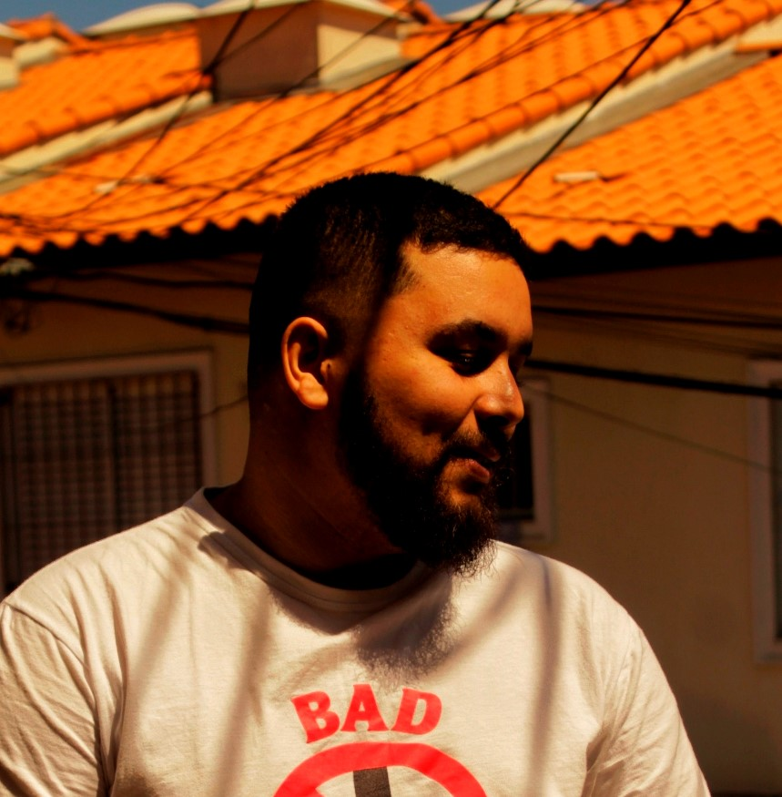

I'm WiW, generative artist from São Paulo - Brasil.
My artworks explore the symbiotic relationship between humans and machines. My focus lies in creating visuals that express this reflection, using generative art as my primary creative tool. HTML is my preferred format for showcasing my work, utilizing JavaScript libraries such as p5.js and hydra-synth. On the portfolio section you can check my projects.
I am open for collaborations, cooperations, and projects that involve my creative abilities. Feel free to get in touch for any inquiries or opportunities.
